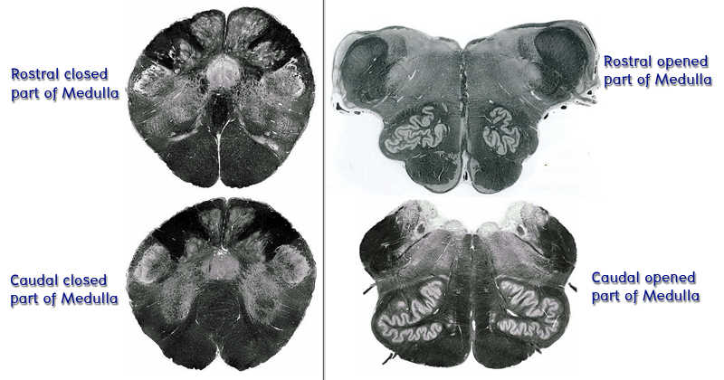
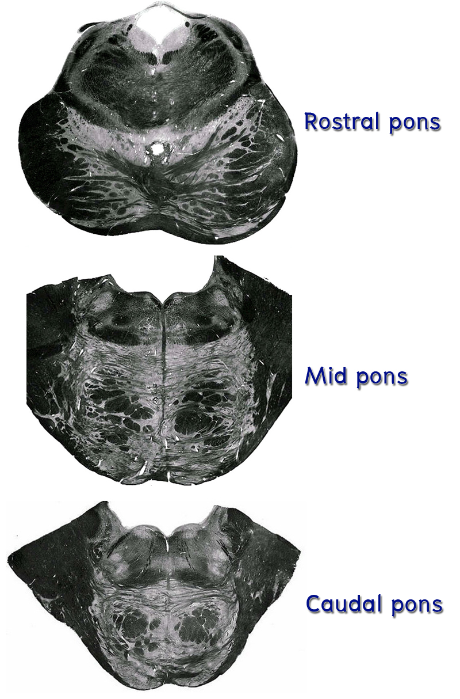
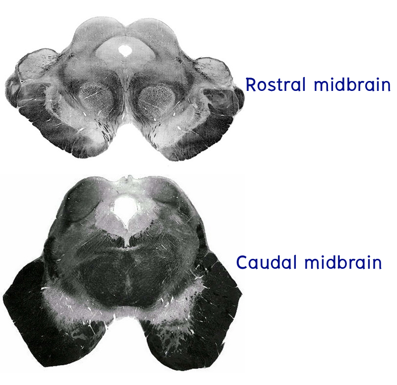

ศึกษา brainstem functional level
หลังจากที่นักศึกษาได้ชี้แสดง structure ที่อยู่บริเวณ external surface ของ brainstem ส่วนต่าง ๆ แล้ว ต่อไปจะเป็นการชี้แสดง structure เหล่านี้จาก transverse section ที่ตัดผ่านระดับต่าง ๆ ของ brainstem การเรียนรู้ในเรื่องนี้จะมีประโยชน์มากต่อการชี้แสดงตำแหน่งที่เกิดพยาธิสภาพแล้วทำให้มีอาการที่แสดงออกให้เห็นจากการซักประวัติและตรวจร่างกาย นักศึกษาควรทบทวนตำแหน่งของสิ่งต่างๆ ที่ชี้แสดงจาก gross specimens ก่อนที่จะดูภาพ transverse section ของ brainstem ระดับต่างๆ เพื่อที่จะสามารถเข้าใจได้ว่า section นั้นตัดผ่านระดับใด
การศึกษา brainstem functional level ในส่วนต่างๆ ของ brain stem มีดังต่อไปนี้คือ
Medulla oblongata มีระดับสำคัญ 4 ระดับคือ

Pons มีระดับที่สำคัญ 3 ระดับคือ

Midbrain มีระดับที่สำคัญอยู่ 2 ระดับคือ
